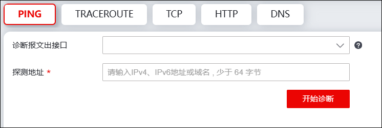
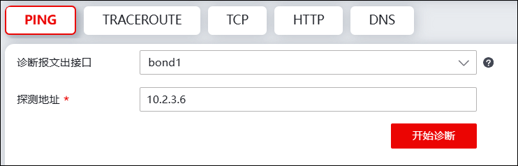
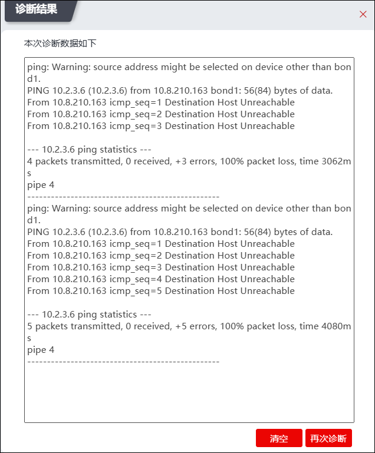
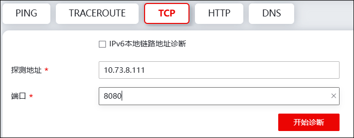
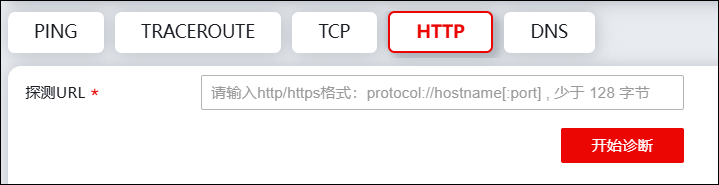

根据网络传输的原理，NGFW分别针对网络层、传输层和应用层提供诊断系统网络连通性的工具，包括PING、TRACEROUTE、TCP、HTTP和DNS。
lPING，探测NGFW到目的主机的网络层是否可达。
lTRACEROUTE，探测NGFW到达目的主机所经过的路由设备。
lTCP，探测NGFW与目标主机建立三次握手所花费的时间，以诊断网络连通状态。
lHTTP，探测NGFW与使用HTTP协议的服务器是否可达。
lDNS，探测DNS服务器是否能成功解析某域名。
系统诊断具体配置步骤如下：
| 步骤1 | 选择 系统管理 > ，界面如下图所示。 |

| 步骤2 | 诊断。 |
| Ø | 网络层诊断 |
选择“PING”或“TRACEROUTE”，诊断报文出接口选择指定诊断报文的发送出接口（诊断本地IPv6链路地址时必须同时设置“接口”），在“探测地址”文本框中输入目的IP地址或域名执行目的可达性检测，界面如下图所示。

点击【开始诊断】，“诊断结果”弹窗如下图所示。

| Ø | 传输层诊断 |
选择“TCP”，然后在“探测地址”文本框中输入目的IP地址（诊断本地IPv6链路地址时需同时设置“诊断报文出接口”），“端口”文本框中配置端口号，点击【开始诊断】按钮执行目的可达性检测，界面如下图所示。

| Ø | 应用层诊断 |
选择“HTTP”，在“探测URL”文本框中输入域名；选择“DNS”，则在“可用域名”文本框中配置域名，然后在“DNS服务器地址”文本框中输入DNS服务器地址。点击【开始诊断】按钮执行目的可达性检测，界面如下图所示。

| 步骤3 | 点击【停止诊断】按钮可以停止命令执行，点击“清空（当前数据）”可以将历史诊断结果从WebUI界面中删除，点击【再次诊断】可重新诊断网络连通性。 |